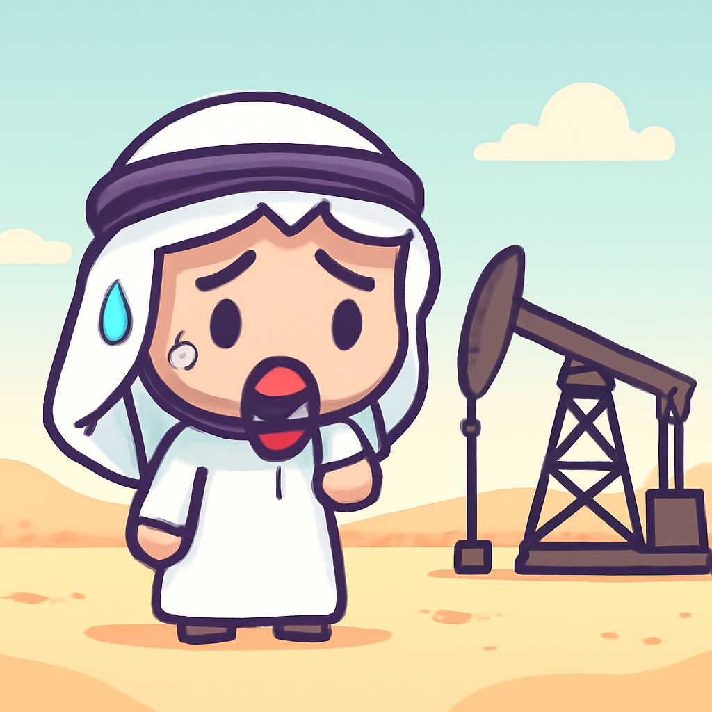
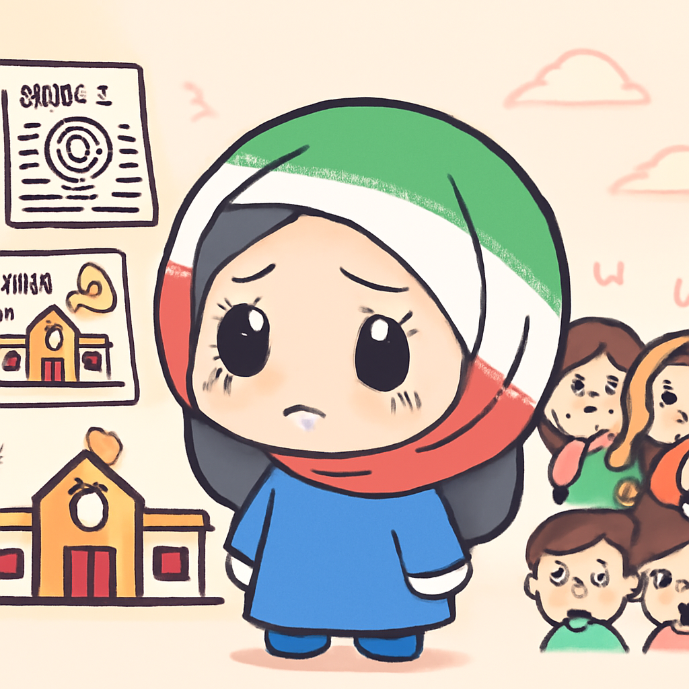
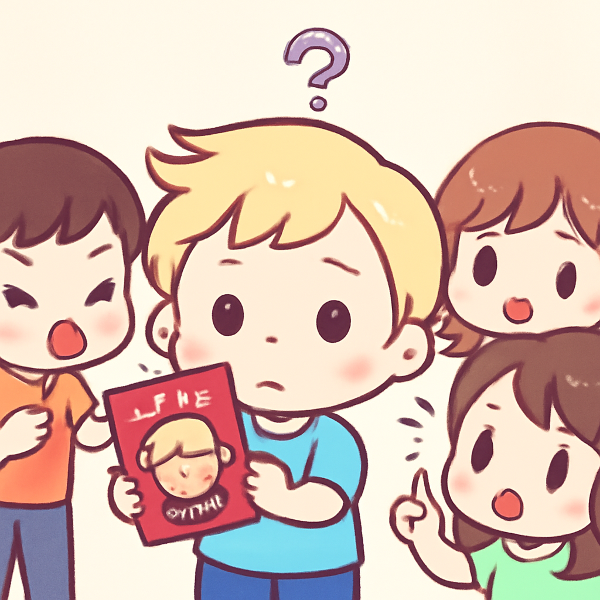

其一 · 阿聯酋 · 阿聯酋宣布退出OPEC
阿聯酋決定退出石油輸出國組織OPEC，影響深遠。

在阿聯酋的杜拜，政府宣佈將退出OPEC，這個決定可能會改變全球石油市場的動態。阿聯酋長期以來對OPEC的產量配額感到不滿，認為這限制了他們的出口能力。此舉可能會削弱OPEC的影響力，讓其他國家開始思考是否也該跟進。未來的油價可能會因此起伏不定，真是讓人捏一把冷汗！
🔗 原始新聞 ↗
2026-04-29 · 以古觀今，以笑抗愁
阿聯酋決定退出石油輸出國組織OPEC，影響深遠。

在阿聯酋的杜拜，政府宣佈將退出OPEC，這個決定可能會改變全球石油市場的動態。阿聯酋長期以來對OPEC的產量配額感到不滿，認為這限制了他們的出口能力。此舉可能會削弱OPEC的影響力，讓其他國家開始思考是否也該跟進。未來的油價可能會因此起伏不定，真是讓人捏一把冷汗！
🔗 原始新聞 ↗
烏克蘭持續對俄羅斯油煉廠發動攻擊，局勢緊張。
在俄羅斯的圖阿普塞，烏克蘭再次對一座油煉廠發動攻擊，這已經是第三次了。隨著火焰吞噬油煉廠，當地居民被迫撤離，俄方則指責烏克蘭在擾亂全球能源市場。這場衝突對全球油價和安全形勢都有深遠影響，真是讓我們的油箱忍不住想要哭泣。
🔗 原始新聞 ↗
伊朗學校空襲事件後，動靜不小，引發國際疑慮。

自從兩個月前伊朗發生致命的學校空襲事件後，外界對伊朗政府的沉默表示擔憂。美國前官員指出，這種沉默非常不尋常，可能意味著某種掩蓋或內部問題。這次事件凸顯了伊朗的政治脆弱性和國際社會的高度關注，未來的走向令人緊張而期待。
🔗 原始新聞 ↗
特朗普的面孔將出現在美國的新護照上，成為爭議焦點。

隨著美國即將慶祝獨立250周年，特朗普的面孔也將出現在新護照上。這一決定引發了不少爭議，支持者認為這是對其領導的肯定，反對者則認為這樣會造成政治分歧。誰會想到，護照上竟然會有這麼多故事？希望下次旅行不會被問到這個話題！
🔗 原始新聞 ↗
隨著限制措施加強，俄羅斯人開始質疑普京的決策。
最近，俄羅斯民眾開始公開質疑普京政府的政策，這在目前的政治氣候下相當罕見。許多網紅和普通民眾在社交媒體上發聲，透露出對政府的失望。在互聯網限制的背景下，這樣的聲音顯得更加珍貴，或許這是改變的開始，也讓我們對未來的俄羅斯有了些許期待。
🔗 原始新聞 ↗